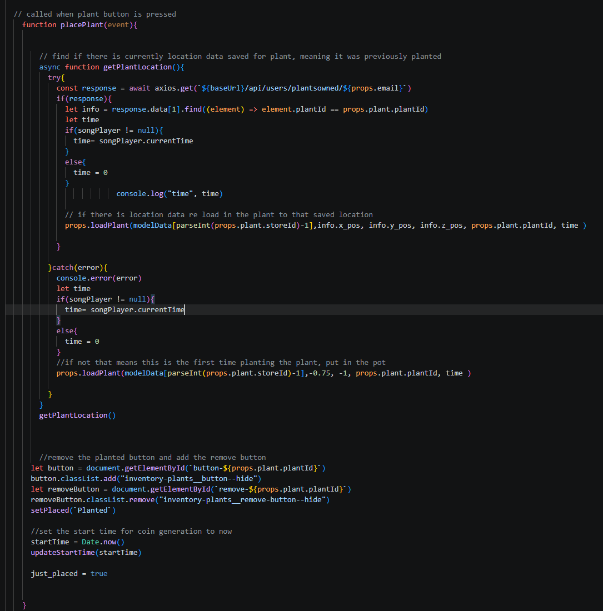
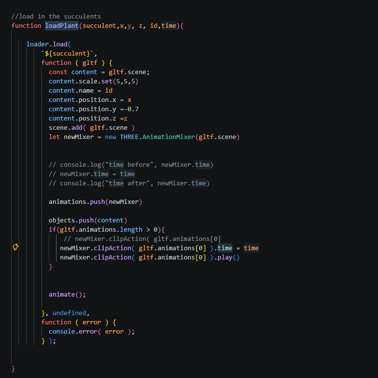

Github Links
Github: Front End
Readme contains detailed information about endpoints, data, responses, game features, and project roadmap.
Github: Back End
Game Overview
Overview
The Song of Succulents is an idle game where players can build a 3D musical succulent garden. Place musical plants in your garden and earn points daily. Each plant plays a different piece of a song that all planys collectively play. Some plants even dance along. Plants that are in the pot grow coins over time but the user must press a button to collect them. New plants can be purchased from the store. Use username: test password: test to check it out wihtout signing up or create an account.
Credits
Nicolette Vere - Programmed frontend and backend, created assets in Blender and Adobe Fresco, designed gameplay, everything except writing the music.
Music by Roman Belov from Pixabay
Technical Information
Tech Stack
React, JavaScript, MySQL, Express, Three.js
Client libraries: react, react-router, axios
Server libraries: knex, express, bcrypt for password hashing
Technical Challenge
A challenge I faced was getting the song pieces and dancing to align no matter when a new plant was planted in the pot.
While it easy to have all plants a player already owned aligned, it was difficult to align the music of a newly placed plant since even miliseconds of delayed caused the new part of the song to sound off. I decided the best solution was the have all of the music available for purchase always playing from the start of the game. All song parts associated with plants available to purchase would start up on game load together, but be muted. Then pieces would be unmuted either autmatically as already potted plants were loaded in or as the player potted plants from their inventory during gameplay.

For a newly placed plants, after the user clicked the plant button, the plant would be added to the pot and the dancing animation would be started by calling loadPlant in the placePlant fucntion in inventoryPlant.js. It would called loadPlant with a default starting position and the current time and unmute the associated music.

The loadPlant function in Pot.js was called that started the gltf animation starting at the provided current time. I found that the percision using current time allowed for the dancing the look aligned.
